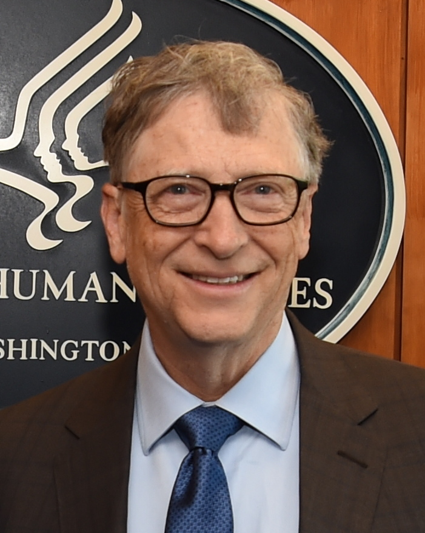

Pendiri Microsoft · Ketua Gates Foundation
Nama: William Henry Gates III
Lahir: 28 Oktober 1955
Tempat: Seattle, Washington
Kebangsaan: Amerika Serikat
Situs: gatesnotes.com
Success is a lousy teacher. It seduces smart people into thinking they can't lose.
” The Road Ahead, 1995Seorang pembaca yang gigih dan pemikir jangka panjang. Sejak remaja saya terbiasa membongkar cara kerja sistem sampai paham betul, dari kode sumber Fortran di terminal sekolah sampai rantai pasok vaksin di puluhan negara.
Gaya kerja saya menuntut angka dan bukti sebelum mengambil keputusan, tetapi saya terbuka mengubah pendapat ketika datanya berubah. Saya menulis untuk menjelaskan, bukan untuk memamerkan. Lima buku yang saya terbitkan sejak 1995 semuanya menyasar pembaca umum.
Kekuatan terbesar saya adalah kesabaran pada masalah besar yang penyelesaiannya memakan puluhan tahun, seperti pemberantasan polio.
Memimpin yayasan filantropi swasta terbesar di dunia. Saya menjabat sebagai ketua bersama sampai 2024, lalu menjadi ketua tunggal setelah Melinda French Gates mengundurkan diri. Fokus kami adalah kesehatan global, pendidikan, dan pengentasan kemiskinan, terutama upaya memberantas penyakit menular seperti polio, malaria, dan tuberkulosis di negara-negara yang paling membutuhkan.
Mendampingi CEO Satya Nadella dan jajaran pimpinan pada keputusan teknis jangka panjang. Saya tidak lagi terlibat dalam pekerjaan harian perusahaan, tetapi masih ikut membahas arah produk serta perkembangan teknologi yang menurut saya akan berpengaruh besar dalam sepuluh sampai dua puluh tahun ke depan.
Setelah menyerahkan kursi CEO kepada Steve Ballmer, saya kembali ke peran teknis. Tugas saya mengawal arah produk perangkat lunak perusahaan dan memastikan keputusan teknologi besar diambil dengan pertimbangan jangka panjang, bukan sekadar mengejar rilis berikutnya.
Menjabat sejak perusahaan resmi menjadi perseroan pada 1981. Selama periode ini Microsoft melewati era MS-DOS, peluncuran Windows, sampai Office menjadi standar di hampir semua tempat kerja. Saya mundur dari kursi ketua pada 2014 dan keluar sepenuhnya dari dewan pada 2020.
Mendirikan perusahaan bersama Paul Allen ketika komputer pribadi masih merupakan hal yang sangat baru. Kami ingin membuat perangkat lunak yang bisa dipakai banyak orang, bukan hanya oleh ahli komputer. Selama 25 tahun memimpin, perusahaan tumbuh dari enam orang di Albuquerque menjadi puluhan ribu karyawan.
Usaha pertama saya bersama Paul Allen: alat penghitung lalu lintas berbasis prosesor Intel 8008. Secara bisnis usaha ini gagal, tetapi dari sinilah kami belajar menulis perangkat lunak untuk mikroprosesor, dan pengalaman itu langsung terpakai beberapa tahun kemudian ketika membuat Altair BASIC.